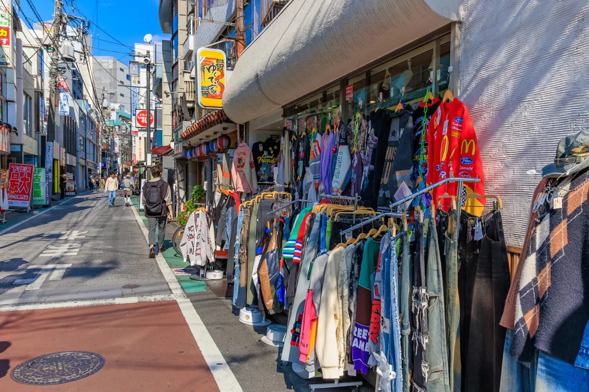

Cafe


「ひとりで来た方が、
出会いがある」

reload内にあるスタイリッシュな空間。Wi-Fi・電源完備で作業にも最適。カウンターが会話を生む。

レコードショップ併設のカフェ。音楽好きにはたまらない空間で、会話のきっかけが自然と生まれる。

40年以上続く老舗の欧風カレー。どこか懐かしい優しい味わい。ひとりで来ると、なぜか店主と話が弾む。

アメリカ古着を中心に個性的なアイテムが豊富。試着を重ねるうちに、自分らしさが見えてくる。

下北沢の演劇文化を牽引する代表的な劇場。生の舞台が、日常に刺激をくれる。演劇デビューにも。

商店街のような雰囲気の施設に飲食店・本屋・コワーキングが集結。「また来てね」と言ってくれる店主がいる。

変わり続ける駅前と、変わらない路地裏。下北沢の魅力は、街そのものよりも、そこにいる「人」かもしれない。どの店にも店主がいて、どの路地にも物語がある。ここで過ごした時間は、どこか懐かしくて、どこか新しい。それが、下北沢という場所の正体だと思う。
ストーリーの続きを読む →この街が好きな人が、毎月集まっている。カフェ巡り、サウナ会、夜の街歩き。参加者の9割が1人参加。「ひとりで来てよかった」という声が、増え続けています。
コミュニティを覗いてみる誰かと来てもいい。でも、ひとりで来た方が、なぜか出会いがある。